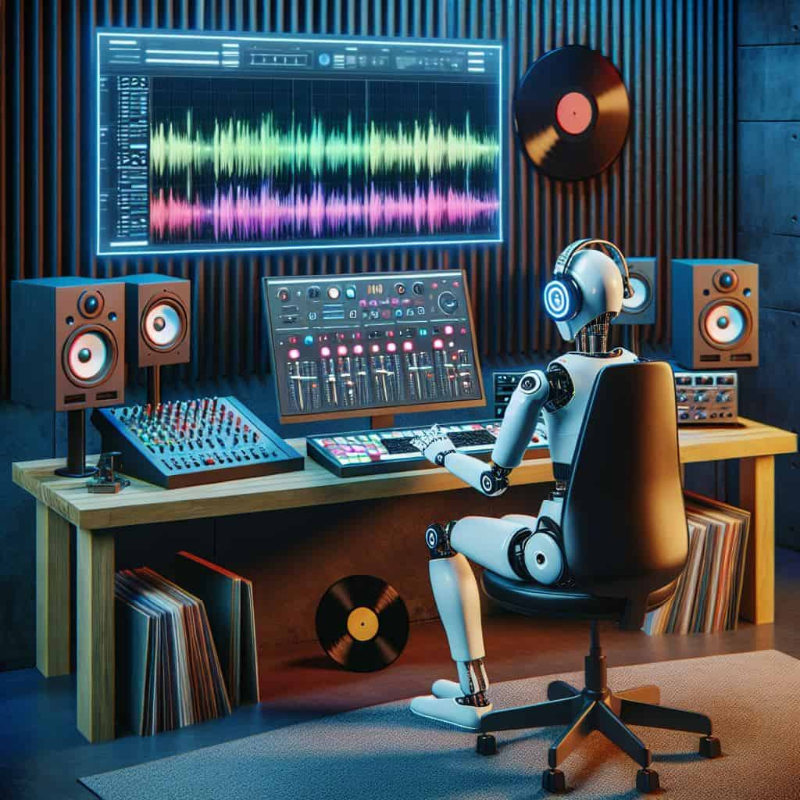

Descripción del modelo

Las IAs para video, imagen y sonido combinan herramientas para crear contenido multimedia a partir de texto, imágenes o audio, o para mejorar el contenido existente. Algunas plataformas se especializan en convertir imágenes a video animado con voz, mientras que otras crean videos completos a partir de texto o editan y mejoran contenido profesionalmente.
Modelos destacados
- - Midjourney V6 - Midjourney lanzó la versión 6 de su modelo de generación de imágenes en octubre de 2025,presentándola como una de las herramientas más avanzadas para la creación de imágenes a partir de texto.
- Arquitectura: Midjourney V6 utiliza una arquitectura de red neuronal profunda optimizada para la generación de imágenes de alta calidad y resolución.
- Calidad de imagen superior: La versión 6 ofrece mejoras significativas en la calidad de las imágenes generadas, con detalles más nítidos, colores más vibrantes y una mayor coherencia visual.
- Estilo y personalización: Permite a los usuarios personalizar el estilo de las imágenes generadas, ofreciendo una amplia gama de opciones artísticas y temáticas.
- Velocidad de generación: La nueva versión ha optimizado los tiempos de procesamiento, permitiendo a los usuarios obtener resultados más rápidamente.
- Integración y accesibilidad: Se integra fácilmente con diversas plataformas y herramientas creativas, facilitando su uso para diseñadores, artistas y creadores de contenido.
- - Runway Gen-2 - Runway lanzó Gen-2 en julio de 2025, presentándola como una herramienta revolucionaria para la generación de video a partir de texto e imágenes.
- Generación de video a partir de texto: Gen-2 permite a los usuarios crear videos completos simplemente proporcionando descripciones textuales, facilitando la producción de contenido visual sin necesidad de habilidades avanzadas en edición de video.
- Transformación de imágenes en video: La herramienta puede convertir imágenes estáticas en videos animados, añadiendo movimiento y efectos visuales para dar vida a las fotografías.
- Calidad y resolución: Gen-2 ofrece videos de alta calidad con resoluciones que van desde HD hasta 4K, asegurando resultados profesionales adecuados para diversas aplicaciones.
- Interfaz intuitiva: La plataforma cuenta con una interfaz fácil de usar que permite a los creadores de contenido generar videos rápidamente, incluso sin experiencia previa en edición.
- Aplicaciones versátiles: Gen-2 es ideal para una variedad de usos, desde marketing y publicidad hasta creación de contenido para redes sociales y proyectos artísticos.
- - AIVA - (Artificial Intelligence Virtual Artist) es una IA especializada en la composición musical, lanzada en 2025 con capacidades avanzadas para crear piezas musicales originales en diversos estilos y géneros.
- Composición automática: AIVA puede generar composiciones musicales completas a partir de simples indicaciones textuales o parámetros definidos por el usuario, facilitando la creación de música personalizada.
- Variedad de estilos: La IA es capaz de componer música en una amplia gama de géneros, desde clásica y jazz hasta música electrónica y pop, adaptándose a las preferencias del usuario.
- Colaboración creativa: AIVA permite a los músicos y compositores colaborar con la IA, ofreciendo sugerencias y variaciones que pueden integrarse en sus propias creaciones.
- Calidad profesional: Las composiciones generadas por AIVA son de alta calidad, aptas para su uso en producciones audiovisuales, videojuegos y otros proyectos creativos.
- Interfaz amigable: La plataforma ofrece una interfaz intuitiva que facilita a los usuarios la creación y edición de música, incluso sin conocimientos técnicos avanzados en teoría musical.